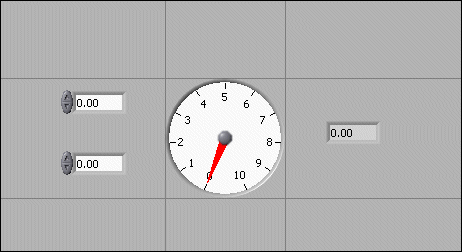

You can customize the front panel by setting the tabbing order of front panel objects, by using imported graphics, by setting front panel objects to automatically resize when the window size changes, and so on.
You can assign keyboard shortcuts to controls so users can navigate the front panel without a mouse. Right-click the control and select Advanced�Key Navigation from the shortcut menu to display the Key Navigation page of the Properties dialog box.
|
Note��LabVIEW does not respond to keyboard shortcuts for hidden controls. |
When a user presses a keyboard shortcut while a VI runs, the associated control receives the focus. If the control is a text or numeric control, LabVIEW highlights the text so you can edit it. If the control is Boolean, press the spacebar, the <Enter>, or the <Enter> key on the numeric keypad to change its value.
The Advanced�Key Navigation shortcut menu item is dimmed for indicators because you cannot enter data in an indicator.
|
Note��You also can use the Key Down event to generate an event when the user presses a specific key on the keyboard. |
You can associate function keys with various buttons that control the behavior of a front panel.
|
Note�� (macOS) Keyboard shortcuts for the function keys work only if the function keys are not assigned as shortcut keys for Expos�. LabVIEW does not support <VolumeUp>, <VolumeDown>, and function keys <F15> to <F24> as shortcut keys on macOS. |
You can configure a button in a VI to behave like a dialog box button so that pressing the <Enter> key on the alphanumeric keyboard or the <Enter> key on the numeric keypad is the same as clicking the button. If you associate either <Enter> key with a dialog box button, LabVIEW automatically draws that button with a thick border around it.
If you navigate to a Boolean control and press the <Enter> key, the Boolean control changes, even if another control uses the <Enter> key as its keyboard shortcut. The assigned <Enter> keyboard shortcut applies only when a Boolean control is not selected.
Controls and indicators on a front panel have an order, called tabbing order, that is unrelated to their position on the front panel. LabVIEW determines tabbing order based on the order in which you place controls on the front panel. The first control or indicator you create on the front panel is element 0, the second is 1, and so on. If you delete a control or indicator, the tabbing order adjusts automatically.
The tabbing order determines the order in which LabVIEW selects controls and indicators when the user presses the <Tab> key while a VI runs. The tabbing order also determines the order in which the controls and indicators appear in the records of datalog files you create when you log the front panel data.
You can set the tabbing order of front panel objects by selecting Edit�Set Tabbing Order.
To prevent users from accessing a control by pressing the <Tab> key while a VI runs, place a checkmark in the Skip this control when tabbing checkbox in the Key Navigation page of the Properties dialog box.
|
Note��If you add a splitter bar to the front panel and create panes the tabbing order of objects on the front panel does not change. A control in any pane can be the next control in the tabbing order. |
You can change the color of many objects in LabVIEW. You can change the color of most front panel objects, panes on the front panel, and block diagram workspaces. You cannot change the color of system controls and indicators because these objects appear in the colors you have set up for the system.
Use the Coloring tool to right-click an object or workspace to change the color of front panel objects, panes on the front panel, and block diagram workspaces. You also can change the default colors for some objects by selecting Tools�Options and selecting Environment from the Category list.
Refer to the following guidelines when using color on a front panel:
You can import graphics from other applications to use as pane backgrounds, items in ring controls, and parts of other controls and indicators.
LabVIEW supports most standard graphic formats, including BMP, JPEG, animated GIF, MNG, animated MNG, and PNG. LabVIEW also supports transparency.
However, imported graphics might slow down screen updates. Make sure you do not place indicators and controls on top of a graphic object so that LabVIEW does not have to redraw the object each time the indicator updates.
 |
Tip��If you must use a large background picture with controls on top of it, divide the picture into several smaller objects and import them separately because large graphics usually take longer to draw than small ones. |
Use one of the following ways to import a graphic.
|
Tip�� Check how the imported graphics look when you load the VI on another platform. For example, a macOS PICT file that has an irregular shape might convert to a rectangular bitmap with a white background on Windows or Linux. |
After you import a graphic, you might need to resize or reorder the image. You cannot resize imported GIFs.
You can import graphics for front panel backgrounds using either of the following ways.
|
Note�� (Windows and macOS) If you import an image by copying and pasting it, the image loses any transparency. |
Select Edit�Enable Panel Grid Alignment to enable the grid alignment on the front panel and align objects as you place them. Select Edit�Disable Panel Grid Alignment to disable the grid alignment and use the visible grid to align objects manually. You also can press the <Ctrl-#> keys to enable or disable the grid alignment. On French keyboards, press the <Ctrl-�> keys.
(macOS) Press the <Command-*> keys. (Linux) Press the <Alt-#> keys.
You also can use the alignment grid on the block diagram. When objects are aligned and distributed evenly, you can use straight wires to wire the objects together. This makes the block diagram easier to read.
Select Tools�Options and select Front Panel from the Category list to hide or customize the grid.
To align objects after you place them, select the objects and select the Align Objects pull-down menu on the toolbar or select Edit�Align Items. To space objects evenly, select the objects and select the Distribute Objects pull-down menu on the toolbar or select Edit�Distribute Items.
Use the Positioning tool to select the front panel objects you want to group and lock together. Click the Reorder button on the toolbar and select Group or Lock from the pull-down menu. Grouped objects maintain their relative arrangement and size when you use the Positioning tool to move and resize them. Locked objects maintain their position on the front panel. You cannot delete grouped or locked objects from the front panel or the block diagram until you ungroup or unlock them. You can set objects to be grouped and locked at the same time. If you set objects to be grouped and locked at the same time, you must ungroup and unlock them before you can delete them from the front panel or the block diagram. Tools other than the Positioning tool work normally with grouped or locked objects.
You can change the size of most front panel objects. When you move the Positioning tool over a resizable object, resizing handles appear at the points where you can resize the object. When you resize an object, the font size remains the same. Resizing a group of objects resizes all the objects within the group.
Some objects change size only horizontally or vertically when you resize them, such as digital numeric controls and indicators. Others keep the same proportions when you resize them, such as knobs. The Positioning cursor appears the same, but the dashed border that surrounds the object moves in only one direction.
You can manually restrict the growth direction when you resize an object. To restrict the growth vertically or horizontally or to maintain the current proportions of the object, press the <Shift> key while you click and drag the resizing handles. To resize an object around its center point, press the <Ctrl> key while you click and drag the resizing handles. To restrict the growth vertically or horizontally or to maintain the current proportions of the object and to resize an object around its center point, press the <Ctrl-Shift> keys while you click and drag the resizing handles.
(macOS) Press the <Option> key in place of the <Ctrl> key. (Linux) Press the <Alt> key in place of the <Ctrl> key.
To resize multiple objects to the same size, select the objects and select the Resize Objects pull-down menu on the toolbar. You can resize all the selected objects to the width or height of the largest or smallest object, and you can resize all the selected objects to a specific size in pixels. If you add splitter bars to the front panel and create panes, you can select different objects on multiple panes by pressing the <Shift> key and selecting the objects you want to resize.
You can set front panel objects to scale, or automatically resize in relation to the pane size, when you resize the pane. You can set one object on the front panel to scale, or you can set all objects on an owning pane to scale. However, you cannot set multiple objects to scale on the front panel unless you set all of them to scale, you group the objects first, or the objects are on separate panes. You also can set a single object to fill a pane.
To set a single object to scale automatically when the pane resizes, right-click the object and select Scale Object with Pane from the shortcut menu. If you set a single front panel object to scale, the object resizes itself automatically in relation to any change in the pane size. The other objects on the front panel reposition themselves to remain consistent with their previous placement on the front panel but do not scale to fit the new size of the pane.
Immediately after you designate a single object on the front panel to scale automatically, gray lines outline several regions on the front panel, as shown in the following front panel. The regions define the positions of the other front panel objects in relation to the object you want to scale. When you resize the pane, the object you set to scale automatically resizes and repositions itself relative to its original location. The gray lines disappear when you run the VI.

To set objects in an owning pane to scale automatically while the pane resizes, right-click a splitter bar and select Pane Sizing�Scale Objects While Resizing from the shortcut menu. An item that scales on the pane will scale while you are resizing the pane instead of when you are finished resizing the pane. To set all objects in an owning pane to scale automatically when the pane resizes, right-click a splitter bar and select Pane Sizing�Scale all Objects with Pane from the shortcut menu of the appropriate pane. If you set all objects on a pane to scale, all objects resize and reposition automatically in relation to any change in the pane size. If you set all objects on a pane to scale and a single object on the pane is already set to scale, a dialog box appears that prompts you to select between setting automatic scaling for the one object or for all objects on the pane. You also can use the Set Scaling Mode method to set all the pane's objects to scale programmatically.
When LabVIEW scales objects automatically, it follows the same conventions as when you resize an object manually. For example, some objects can resize only horizontally or vertically, and the font size remains the same when you resize an object.
After LabVIEW automatically scales an object, the object might not scale back to its exact original size when you size the pane back to its original position. Before you save the VI, select Edit�Undo to restore the original front panel window and object sizes.
You can set an array to scale or set the objects within an array to scale. If you set the array to scale, you adjust the number of rows and columns you can see within the array. If you set the objects within the array to scale, you always see the same number of rows and columns, though different sizes, within the array.
You also can set a cluster to scale or set objects within the cluster to scale. If you set a cluster to scale, the objects within the cluster do not scale. If you set objects within the cluster to scale, the cluster does not scale unless you right-click the cluster and select AutoSizing�Size to Fit from the shortcut menu.
To set a single object to fill the pane, right-click the object and select Fit Control to Pane from the shortcut menu. The object should be the only object in the pane, otherwise other objects are overlapped by the object you select to fit to the pane. The object resizes itself to fill the pane, and automatically resizes in relation to any change in the pane size.
You can add or reduce space on the front panel without resizing the window.